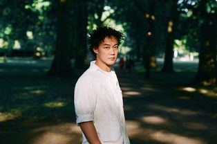

陈奕迅（Eason Chan，1974年7月27日-），出生于中国香港，毕业于英国金斯顿大学，中国香港流行乐男歌手、演员。他因获得第14届新秀歌唱大赛冠军而正式出道，代表作品有《十年》《浮夸》等。曾获得十大劲歌金曲最受欢迎男歌星奖、第26届中国台湾金曲奖最佳国语男歌手奖等多个奖项，并入围“2018最具商业价值明星榜。
1995年，陈奕迅暑假期间回香港参加TVB举办的第14届新秀歌唱大赛，在多个环节均获得高评分，成为该届冠军，随即跟华星唱片公司签下歌星合约，是华星唱片公司旗下一个寂寂无名的歌手。之后陈奕迅签约英皇唱片公司，事业稳步上扬
1996年，陈奕迅推出首张个人同名大碟《陈奕迅》，其后《与我常在》和《我的快乐时代》推出后，渐受大众认识及注视。《我的快乐时代》更夺得首个叱吒乐坛流行榜颁奖典礼的“叱吒乐坛至尊唱片大奖”
1999年，陈奕迅的专辑《幸福》、《天佑爱人》和《新生活》等相继热卖，其中歌曲如《幸福摩天轮》和《每一个明天》等流行一时。同年与乐坛巨星梅艳芳合唱《同声一笑》。并在10月7日至10日于香港体育馆举行一连四场的“BigLive陈奕迅大个唱99”演唱会
2000年，陈奕迅转投英皇娱乐旗下品牌MusicPlus。相继推出的专辑大卖《打得火热》、《TheLineUp》、和《LiveForToday》均成为热卖作品，其中《ShallWeTalk》、《打得火热》、《K歌之王》等占据流行榜冠军
陈奕迅于1995年暑假期间回香港参加TVB举办的第14届新秀歌唱大赛，成为该届冠军，随即跟华星唱片公司签下歌星合约，正式踏入香港乐坛。
陈奕迅于1996年推出首张个人同名大碟《陈奕迅》，其后《与我常在》和《我的快乐时代》推出后，渐受大众认识及注视。其专辑《我的快乐时代》获得首个叱吒乐坛流行榜颁奖典礼的“叱吒乐坛至尊唱片大奖”。
1997年，发行个人首张国语专辑《一滴眼泪》；4月12日，发行粤语专辑《与我常在》，同名主打歌《与我常在》获得第二十届十大中文金曲颁奖典礼最佳创作歌曲奖；同年，主演个人首部电影《旺角大家姐》。
1998年5月，发行粤语专辑《我的快乐时代》。专辑中的歌曲《天下无双》让陈奕迅在乐坛获得关注，并获得第二十一届十大中文金奖以及十大劲歌金曲奖；在这张专辑中，陈奕迅还首次参与音乐创作，为专辑作曲了《新曲+精选》以及《反高潮》两首歌曲；此外，陈奕迅还凭借该专辑获得叱吒乐坛流行榜颁奖典礼“叱吒乐坛至尊唱片大奖”。
1999年，《幸福》、《天佑爱人》和《新生活》 等专辑相继热卖，其中歌曲如《幸福摩天轮》和《每一个明天》等流行一时；同年与梅艳芳合唱《同声一笑》；并在10月7日至10日于香港体育馆举行一连四场的“Big Live陈奕迅大个唱99”演唱会；12月，发行粤语专辑《幸福》；该专辑成为陈奕迅确立个人音乐风格的作品；收录于专辑中的歌曲《幸福摩天轮》获得叱咤乐坛流行榜颁奖典礼叱咤乐坛我最喜爱的歌曲奖以及十大劲歌金曲奖。
2000年陈奕迅转投英皇娱乐旗下品牌Music Plus，与谢霆锋，何嘉莉，叶佩雯，容祖儿和王杰成为公司重要歌手；相继推出的专辑大卖《打得火热》、《Shall We Dance? Shall We Talk!》、《The Easy Ride》、《The Line Up》、《Eason 4 A Change & Hits》和《Live For Today》均成为热卖作品，其中《Shall We Talk》、《打得火热》、《K歌之王》、《明年今日》均进占流行榜冠军。12月，与金城武、陈慧琳共同主演奇幻爱情片《薰衣草》；同年，在黑色幽默片《江湖告急》中饰演神神兮兮的警探叶伟信。
2001年，主演爱情片《常在我心》；在片中个性乐观的绝症患者纪小段，并演唱电影的主题曲《活着多好》；4月，发行粤语专辑《Shall We Dance? Shall We Talk!》，其中主打歌《Shall We Talk》获得十大劲歌金曲金曲金奖以及第24届十大中文金曲颁奖典礼全球华人至尊金曲奖；7月，发行流行摇滚风格的专辑《反正是我》，并在专辑中尝试不同类型的曲风；11月10日至15日，在香港红馆举行6场“The Easy Ride陈奕迅演唱会”；同年，获得叱吒乐坛流行榜颁奖典礼叱吒乐坛男歌手金奖。
2003年4月，发行国语专辑《黑白灰》，并首次尝试以“概念”的方式融合音乐，专辑主打歌《十年》获得中国歌曲排行榜海外十大金曲以及第4届百事音乐风云榜十大金曲奖；8月，在第14届金曲奖颁奖典礼上，凭借专辑《Special Thanks to》获得最佳国语男演唱人奖以及最佳专辑奖；同年他与英皇唱片公司因未能就续约问题达成共识关系, 而遭到“雪藏”。同时其任职香港房屋署总屋宇设备工程师的父亲陈裘大被控受贿罪成入狱，此事对陈奕迅打击甚大。
2005年，陈奕迅加盟环球唱片旗下新艺宝唱片公司，新城电台于3月17日举行一场名为新城唱好陈奕迅05出击音乐会。而作为“复出”的首张专辑《U87》亦于2005年6月7日推出（U87是他录制专辑时的麦克风型号），四首主打歌（《夕阳无限好》、《阿牛》、《浮夸》及《葡萄成熟时》）获香港各大传媒流行榜周冠军。《U87》为2005年香港最高销售量的粤语非精选专辑。《U87》更获Time时代周刊选为“2005年最值得购买的五大亚洲唱片”；同年，主演喜剧片《神经侠侣》，在片中饰演外表平凡的香港湾仔区警员陈俊杰。
2006年2月，在香港体育馆举行9场“Get A Life”演唱会；4月推出专辑《Life Continues》，主打歌《最佳损友》获香港各大传媒流行榜周冠军；其后获奥比斯选为“光明大使”，并探访印度的失明儿童；10月21日，于正东10周年演唱会与张学友合唱《热辣辣》、《天下太平》，及互唱《如果这都不算爱》、《最佳损友》，被许多人形容为新的“左麟右李”；11月，推出专辑《What's Going On》，其中包括多首冠军歌如《裙下之臣》、《黑择明》和《富士山下》，《富士山下》的国语版《爱情转移》亦成为2007年内地各颁奖礼的大赢家。
2013年7月22日，发行粤语迷你专辑《The Key》；该专辑融合了电子乐、弦乐、民谣吉他等多种音乐元素，其中主打歌《任我行》获得CASH金帆音乐奖CASH最佳歌曲大奖；9月起，在墨尔本、悉尼等地举行Eason's LIFE世界巡回演唱会；12月，发行演唱会专辑《Eason's Life 陈奕迅2013演唱会》。
2014年5月15日，发行国语概念专辑《米·闪》，该专辑融合了民谣、抒情两种不同的风格。
2015年6月27日，在第26届台湾金曲奖颁奖礼上演唱串烧歌曲《八号风球》，并凭借专辑《米·闪》获得金曲奖最佳国语男歌手奖；7月10日，发行粤语专辑《准备中》，该专辑发行后连续八星期获得香港销售榜冠军。
2016年，在佛山、台北等地举行“Another Eason's LIFE世界巡回演唱会”；10月，发行单曲《I Do》；11月，演唱电影《摆渡人》爱情版主题曲《让我留在你身边》。
2017年5月18日，陈奕迅发行国语EP《放&披风》，包含两首全新国语双单曲《放》和《披风》；确认加盟《中国新声音2》，成为第二季导师。8月4日，陈奕迅发售双单曲《海胆&谁来剪月光》，包含两首全新国语双单曲《海胆 (Sigh)》和《谁来剪月光 (Miss)》。11月4日，陈奕迅 “Eason says C’mon in~ Tour”欧洲行第四站在英国首都伦敦举行。12月16日，获得第十一届音乐盛典咪咕汇年度港台最受欢迎男歌手奖。
2019年1月1日，凭借《可一可再》获得2018年度叱咤乐坛流行榜颁奖典礼专业推介叱咤十大第四位。1月18日，凭借《卧底巨星》入围第10届金扫帚奖最令人失望男演员。2月27日，演唱的歌曲《疯狂的朋友》MV上线。3月12日，获得首届KKBOX香港风云榜颁奖礼十大年度风云歌手奖。7月4日，为电影《银河补习班》演唱的推广曲《相信你的人》MV发布。
2020年4月，参与合唱公益抗疫歌《Fight as ONE》。
陈奕迅因为父亲陈裘大为高级公务员，有机会利用政府津贴到英国读书，故中学和大学时光均在英国渡过。大学时期曾修读建筑学及4年音乐课程。
陈奕迅与徐濠潆于1996年开始拍拖，当时陈奕迅通过“新秀歌唱大赛”入行，是华星唱片公司旗下一个寂寂无名的歌手，徐濠潆也只是TVB电视台一位三线的演员。1997年二人开始同居生活。2000年陈奕迅签约英皇唱片公司，事业稳步上扬，徐濠潆则逐步淡出，只做香港某著名服装店的买手，专心做陈奕迅背后的女人。
2004年，陈奕迅的父亲陈裘大被控入狱，在这期间徐濠萦一直陪伴在陈裘大身旁，每次上法庭都见徐濠萦出现，或许因此打动了陈奕迅父亲，认同了两人关系。而2004年也可以说是陈奕迅事业低谷的一年，与英皇约满，极少工作。2004年10月，女儿陈康堤出生，小生命的到来让初为人父的陈奕迅改变很多，开始戒烟，努力工作。
2015年12月，《明报》公布了2015年港星收入排行榜，陈奕迅以8300万排名第十。
| 年份 | 奖项 |
|---|---|
| 2019-3-12 | 首届KKBOX香港风云榜颁奖礼十大年度风云歌手奖（获奖） |
| 2018-8-23 | 2018全球华人歌曲排行榜-年度最佳男歌手（提名） |
| 2017-8-9 | 华语金曲奖 年度最佳国语歌曲 《在这个世界相遇》 |
| 2016-12-03 | 第十届 音乐盛典咪咕汇十年最受欢迎歌手（获奖） |
| 2015 | 第19届 最受欢迎男歌手 （提名） |
| 2014-01-12 | 第36届十大中文金曲 全年最高销量歌手大奖 （获奖） |
| 2013 | 大众音乐榜-大众华语最佳男歌手 （提名） |
| 2012 | 新城国语力颁奖礼2012 - 新城国语力歌曲 孤独患者 （获奖） |
| 2011 | CASH金帆音乐奖 - 最佳歌曲大奖 六月飞霜 （获奖） |
| 2010 | 十大中文金曲颁奖典礼- 全球华人至尊金曲奖 陀飞轮 （获奖) |
| 2009 | 第六届 劲歌王颁奖典礼——港台地区最受欢迎男歌手 （获奖） |